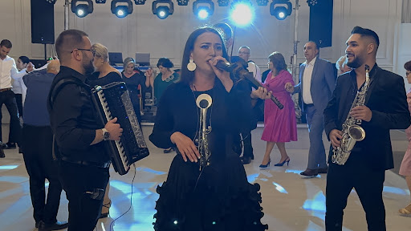
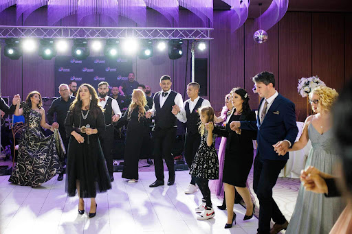

Sfaturi Muzicale
Cum să alegi formația de nuntă perfectă în 2026
Planificarea unei nunți începe cu muzica. Află care sunt criteriile esențiale pentru a selecta o formatie nunta Bucuresti care să mențină ringul plin toată noaptea.
Descoperă secretele unei petreceri reușite, de la alegerea repertoriului până la planificarea logistică pentru nunți și botezuri.

Planificarea unei nunți începe cu muzica. Află care sunt criteriile esențiale pentru a selecta o formatie nunta Bucuresti care să mențină ringul plin toată noaptea.

Dilema oricărui părinte: tradiție sau modernism? Analizăm cum un solist muzica usoara poate completa perfect momentele de folclor autentic.

Folclorul rămâne inima petrecerilor românești. Descoperă piesele care nu trebuie să lipsească din programul artistic al serii tale speciale.

De la calitatea sunetului la prezența scenică, micile detalii fac diferența între o petrecere obișnuită și una pe care invitații o țin minte.